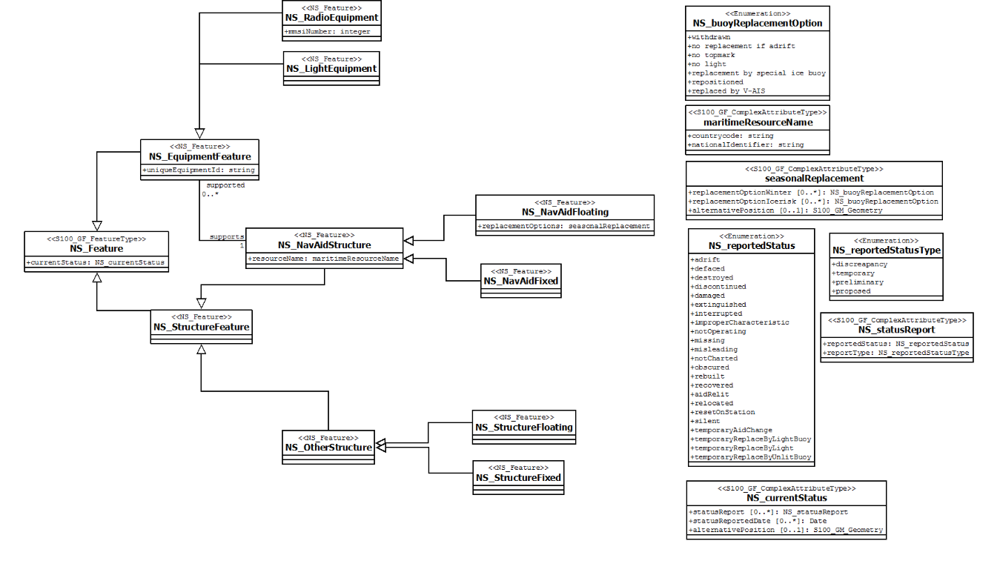

S-125
Navigation Services
a place to discuss and follow the work
Knowledgeable WG members: Stefan Engström (FI), Dave Lewald (US Coast Guard)
The following is based on the test dataset, Jussland
but IALA has S-201 Aids to Navigation Information - so what does this add?
- Most features also found in S-101
- What data to include in S-125?
- Technical/additional data not in the ENC
- Is S-125 a list of lights?
- Additional objects/features that should be added to S-125?
- What information is needed in S-125?
- By the mariner / by others / intended end-use ?
- Part of S-101 ECDIS or standalone?
- Most positions already in S-101 (not all)
- Type of station, and relaying data (affects range)
- Location of base stations sending V-AIS (S-123 ?)
- Reporting mode of station
- Service details, ASM message types, pos. offset trigger details
Structures/Supports
The support or structure of any equipment is normally the physical structure upon which equipment is placed. Usually the same support is shared among different equipment. For all physical equipment, positions given are for the support. Exceptions are made for virtual equipment, where the virtual position is more significant for navigation.
Lights
Lights include navigationally important or interesting lights with the characteristics of conventional navigational lights as described in S-12.
| IALA-GUID | Station Name | Position | Character | Height | Range | Daymark | Additional |
|---|---|---|---|---|---|---|---|
| JU-A2N-00001 | Mickleden | 32° 31,00’S 61° 06,86’E | Fl.5s | 12m | 22M | xxx | Sound, AIS, Racon |
| JU-A2N-00003 | East yard, No 3 Basin | 32°30.60´S 61°03.90´E | Horn(1)30s | 8m | 12M | xxx | This is a bright Strip Light, 6m wide |
Strip Light
A low intensity light, usually used in addition to a painted line. The light can be several meters long, and placed either horizontally or vertically. The Strip light might have a rhythmic light character and colored light. Usual use is to mark pier heads, quay walls and other structures. Due to low efficiency and range of the light, on nautical charts the flare symbol is not used for charting strip lights.
Lite Pipe
The lite pipe is a system of LED- diodes in a pipe, forming a highly efficient strip light. Lite pipe length can be 2-6 meters, and range up to 22M. Although being similar to a conventional strip light, the long range makes this light navigationally more interesting. This light will seem like a conventional light at long distance, and show up as a bright strip light at closer range. Lite pipes® can be used as emergency- and backup lights in lighthouses.
| IALA-GUID | Name | Position | Character | Height | Type/Range | Daymark | Additional |
|---|---|---|---|---|---|---|---|
| East yard, No 2 Basin | 32° 36,50’S 60° 49,60’E | Iso | 8m | Horizontal light 6 m wide | Horizontal painted line, 6 m wide | xxx | |
| JU-A2N-00003 | East yard, No 3 Basin | 32°30.60´S 61°03.90´E | Horn(1)30s | 8m | Horizontal light 6 m wide, range 12M | Horizontal painted line, 6 m wide | Lite Pipe |
Sound Signals
Sound signals include conventional sound signaling equipment.
| IALA-GUID | Station Name | Position | Character | Height | Range | Daymark | Additional |
|---|---|---|---|---|---|---|---|
| JU-A2N-00003 | Mickleden | 32° 31,00’S 61° 06,86’E | Siren(2) 30s Whistle | 12m | 22M | xxx | Light, AIS, Racon |
| JU-A2N-00004 | Mickledore 1 | 32°30.60´S 61°03.90´E | Horn(1)30s | 43m | 18/12M | xxx | Light, AIS |
TABLE QUESTION: why not have Siren and Horn be listed under separate column as 'Type', like in Strip Light?
Racon
Conventional Racon usually triggered by and displayed on either or both of the below bandwidths. The different bandwidths are usually known as either;
- X-band = 3 cm = 9 GHz
- S-band = 10 cm = 3 GHz.
| Station Name | Position | Symbol | Frequency | Sector | Range | Remarks |
|---|---|---|---|---|---|---|
| Mickleden | 32° 31,00’S 61° 06,86’E | G | 3 Ghz 9 Ghz | 0-360 | 15M | xxx |
Manually Activated AtoN
Manually activated aids to navigation include Lights and fog signals, which are activated by radio. Activation process might be "automatic" by f.ex. multiple key presses on a specific VHF- channel, or by a VHF- request to a harbor master or similar official. Due to different activation processes, the manually activated lights and fog signals do need an additional note on charts. Instead of the note, a reference to an associated publication might be given.
| Station Name | Position | Characteristic | Service Details | Type | Remarks |
|---|---|---|---|---|---|
| Mickleden | 32° 31,00’S 61° 06,86’E | Siren(2) 30s Whistle | Horn is activated by keying the mic 5 times on VHF-FM Ch 81. Horn will operate for 30 minutes after activation | Sound | xxx |
| Mickledore I | 32°30.60´S 61°03.90´E | Horn(1)30s | Horn is activated by VHF- request to the Jussland radio on ch 16 or ch 71. Horn will operate for the duration agreed with the officials. | Sound | xxx |
AIS AtoN
In the case of virtual AIS AtoN, the mariner will first and foremost be interested in the position of the "virtual position", even such structure actually do not exist. The range of the AIS AtoN will anyway depend of the actual broadcasting base-station, which might also be interesting for the mariner. This information is usually not displayed on the chart, where distinction between real and synthetic AIS AtoN is not made.
| Station Name | Position (bold=EPFS) | MMSI | Service Details | Type Details | Transmitted Message Type and mode |
|---|---|---|---|---|---|
| Mickleden | 32° 31,00’S 61° 06,86’E | 995791001 | Broadcasts msg 21 every 3 minutes, AIS SART repeating Off-position limit is 10 meters | Type3, Real | 6 8 12 14 21B |
| Skerries TSS North (V-AIS) | 32°20.80´S 61°04.80´E | 995796002 | Broadcasts every 3 minutes, Base station is JUSSLAND MRCC in position 32°31′.50 S 60°54′.07 E V-AIS permanently marking the north entrance of the Skerries TSS. | Virtual | 21B |
| Jussland small arms range | 32°40.00 ́S 60°05.60 ́E | 99571004 | Broadcasts every 3 minutes. , Base station is JUSSLAND MRCC in position 32°31′.50 S 60°54′.07 E This AIS marks a safety sector. The area consists of a circle, having a radius of 5M, and centered upon the position of this tower, extends between an azimuth angle of 250° clockwise to an azimuth angle of 290°. | Type1, Synthetic, Predicted | 21B |
Types of AIS AtoN Station
| Type | Transmit Capable | Receive Capable | Operating Mode | Configuration Details | Type Details | Note |
|---|---|---|---|---|---|---|
| 1 | yes | no | FATDMA | The Type 1 unit must be configured to use the slots reserved for it before being placed into service. | This is the simplest type of AIS AtoN station, likely to have low cost and power consumption. | The slots used by the Type 1 AIS AtoN station need to be reserved by a competent authority, using Message 20, transmitted from an AIS station in the coverage area. |
| 2 | yes | yes | an AIS receiver of limited capability which allows the Type 2 Station to be remotely configured via the AIS VDL. | This receiver operates on a single AIS channel. | xxx | |
| 3 | yes | yes (2) | FATDMA/RATDMA | contains two AIS receiving processes that allow it to participate fully on the AIS VDL. | able to receive and relay AIS messages, including control and configuration messages for itself or for other AIS AtoN stations in a chain. | The Type 3 AIS AtoN Station is more complex than the Type 1 and Type 2. |
Reporting modes for AIS AtoN messages
| Mode | Message # | Transmission type | Transmission channels | Transmission latency |
|---|---|---|---|---|
| A | 21 | alternates between channels | 1 & 2 | in a subsequent frame that is nominally one reporting interval later. |
| B | 21 | quick succession | 1 & 2 | nominally 4 seconds |
| C | 21 | single channel | 1 or 2 | ? |
Virtual AIS
V-AIS is only encoded into S-101 where it is known that the V-AIS is intended to be permanent, or deployed for a specified fixed period.
Where it is known that a V-AIS aid to navigation is moved or withdrawn on a regular basis and/or at short notice, such that implementing these changes through the application of ENC Updates is impractical, the virtual aid should not be encoded. This publication might include some V-AIS that are not included in the S-101 ENC, together with an explanation of the use.
Virtual AtoN deemed not to be appropriate to display in charts or publications are reflected in Maritime Safety Information (MSI).
Using of AIS for urgent, temporary and dynamic information
AIS marking is needed because of a wreck or other obstruction to shipping.
One or several real or V-AIS AtoN will be used to mark the area of danger (as soon as possible for emergency markings). AIS messages will be broadcasted to vessels in the vicinity, the associated markings will be visible ONLY in vessels with updated radar and ECDIS- equipment, capable of displaying AIS AtoN. Procedures for these broadcasts are found in the publication Radio Services.
The V-AIS will normally display as an "emergency wreck marking" or "isolated danger", and have a name best describing the reason of its use.
The base station for these V-AIS objects is JUSSLAND MRCC in position 32°31′.50 S 60°54′.07 E, with a range of 50M.
MMSI- numbers of these AIS AtoN will be in the range between 995796500 and 995796599. The range might be extended by the use of relaying AIS- equipment.
These emergency-marking V-AIS objects will have Unique identifiers according to IALA- recommendation, with character T as the first character of the alphanumeric code.
The identifiers will start from range: JU-A2N-T0000000000000000001, with increasing numbers. Numbers will normally be reused only if a temporary AtoN is periodically used in the exact same position as before.
Non Permanent Markings
Temporary Markings
Markings that change temporarily on a short notice cannot always be updated or included in charts or publications.
The Jussland Notices to Mariners will provide further information of these changes.
Seasonal markings
S-125 should provide additional data on seasonal changes
Seasonal changes to or replacement of buoys in JUSSLAND include those:
- made during the winter-season
- during periods of ice risk
Changes to buoys may include:
- withdrawal of a buoy
- no replacement of a buoy if adrift
- no topmark
- no light
- replacement by a special ice buoy
Withdrawn buoys can also be substituted by V-AIS, for the season when harsh weather and ice might endanger the physical structure.
| IALA-GUID | Station Name | Position | Seasonal Data | Daymark | Additional |
|---|---|---|---|---|---|
| JU-A2N-00901 | Special mark | 32° 38,50’S 61° 03,35’E | Withdrawn for the winter season approx Nov-Apr | Special mark | Further detail in NtM |
| JU-A2N-00903 | Patter bank | 32°24’48”S 61°02’00”E | Replaced by V-AIS app. Nov-Apr | Further detail in NtM |
Any faults in the navigational services shall be duly reported to JUSSLAND authorities.
Reports should be made to:
E-mail [mms.notifications@jussland.gov.js]*;
Fax [+999 008675308];
Telephone [+999 008675309].
*Email is preferred, but calls to JUSSLAND MRCC using VHF is also possible. SEASONAL
DGNSS Stations
Using of S-240 (DGNSS Station Almanac) to be investigated. What will the S-125 add that the S-240 doesn't contain?
Category of AtoN
There are three categories of AtoN, reflecting their navigational significance. Also V-AIS objects should be categorized.
| Category number | level of navigational significance* | Example | Availability objective % |
|---|---|---|---|
| 1 | VITAL | lighted AtoN and racons that are considered essential for marking landfalls, primary routes, channels, waterways, dangers or the protection of the marine environment. | 99.8% |
| 2 | IMPORTANT | it may include any lighted AtoN and racons that mark secondary routes and those used to supplement the marking of primary routes. | 99.0% |
| 3 | NECESSARY | xxx | 97.0% |
*An AtoN or system of AtoN that is considered by the Competent Authority to be of this level of navigational significance.
Category of changes to AtoN
There are six categories of changes to AtoNs:
| Type number | LNTM section | Type of Change | Notes |
|---|---|---|---|
| 1 | II | Discrepancies | |
| 2 | III | Temporary Changes | NOAA doesn't chart |
| 3 | IV | Chart Corrections | ATON related |
| 4 | V | Advance Notices | ATON related |
| 5 | VI | Proposed Changes | ATON related |
| 6 | VIII | Light List Corrections |
Possibly the PS would look at the SORDATE of the chart and/or its last update to determine what would be displayed.
In other words, if the ATON is current the user sees nothing, but if it’s not current, then the mariner would see an indication that the ATON was “Not as Charted” with the info in the attributes.
S-1xx interoperability with S-125
How to ensure the interoperability of the S-101 and the S-125? Unique identifier / Light number / MMSI / Maritime Resource Names
What about Virtual Ais and interoperability?
- Using of S-240 / S-201 to be investigated
The S-111 surface currents has Notice to Mariner warnings that need to be displayed when surface currents are displayed...will they be here or from Nav Warnings?
Questions
V-AIS Emergency marking
- Probable future use of V-AIS is also dynamic / emergency marking
- This data will be dynamic and not available to include in charts or publications in advance
- Procedures for use might be included in a publication.
- – (Local rules)
- Relation to Radio services /Traffic services ?
- V-AIS probably only one part of an emergency marking procedure.
Temporary and Seasonal
- Temporary markings
- Buoys that are being withdrawn or substituted with other buoys or V-AIS seasonally
- – Some changes updated in maps, not all
- AIS Aton might change type in the process
- Procedure described in publication
- Schedule for seasonal changes
- – Updates of seasonal data
Member States Notice to Mariners
for reference and understanding
S-125 Data Structure (proposed)
items with external links are already in FCD Registry 
Features
S101 EquipmentFeatures
Daymark (also S101 NavAidFeature) FogSignal LightAirObstruction LightAllAround LightFogDetector LightSectored PhysicalAISAidToNavigation RadarTransponderBeacon RadioStation RetroReflector SignalStationTraffic SignalStationWarning VirtualAISAidToNavigation
Nautical Services Features
NavigationalServiceBuoy NS_EquipmentFeature NS_StructureFeature
Nautical Services EquipmentFeatures
NS_RadioEquipment NS_LightEquipment
Nautical Services StructureFeatures
NS_NavAidStructure NS_OtherStructure
NS_NavAidFloatiing NS_NavAidFixed
Nautical Services OtherStructure Features
NS_StructureFloating NS_StructureFixed
BeaconCardinal BeaconIsolatedDanger BeaconLateral BeaconSafeWater BeaconSpecialPurposeGeneral BuildingSingle (also S101 StructureFeature) BuoyCardinal BuoyEmergencyWreckMarking BuoyIsolatedDanger BuoyLateral BuoySafeWater BuoySpecialPurposeGeneral Landmark (or Strucutre?) LightFloat LightVessel Pile (or Structure?) RadarTransponderBeacon (This wasn't in the NavigationalService data model)
S101 StructureFeatures
Bridge Crane FishingFacility FloatingDock FortifiedStructure Hulk MooringWarpingFacility Obstruction OffshorePlatform Pontoon PylonBridgeSupport ShorelineConstruction SiloTank Wreck
InformationType
ContactDetails NauticalInformation SupplementaryInformation UpdateInformation (that should be used)
complex attribute
maritimeResourceName seasonalReplacement
Enumerations
general
BuoyReplacementOption function product IALA_aidAvailabilityCategory natureOfConstruction VerticalDatum visuallyConspicuous techniquOfSoundingMeasurement trafficFlow radarConspicuous signalGeneration qualityOfSoundingMeasurement qualityOfPosition status condition marksNavigationalSystemOf
categories
categoryOfSpecialPurposeMark categoryOfCardinalMark categoryOfLandmark categoryOfFogSignal categoryOfLight categoryOfOffshorePlatform categoryOfLateralMark categoryOfInstallationBuoy categoryOfRadarTransponderBeacon categoryOfNavigationLine categoryOfPile categoryOfSiloTank categoryOfRecommendedTrack
color, characteristics, and shape
beaconShape buoyShape colourPattern colour buildingShape lightVisibility exhibitionConditionOfLight lightCharacteristic topmarkDaymarkShape